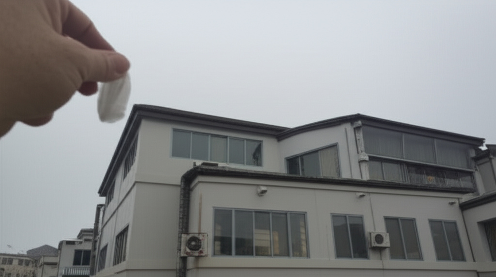

# 近期健康與社會趨勢新聞摘要
## 引言
近期新聞涵蓋了健康、社會、國際等多個面向的議題。從台灣民眾的健康飲食習慣、高齡化社會的挑戰，到國際間的詐騙案件與野火災害，反映了當前社會的多元複雜性。以下將針對幾個關鍵議題進行整理與分析。
## 主體內容
### 第一點：台灣健康飲食與慢性病防治
新聞中多次提及與飲食相關的健康問題。台灣十大死因中，有七項與飲食息息相關，顯示飲食習慣對於國人健康的重要性。文章建議可參考地中海飲食、得舒飲食等健康飲食模式，以預防慢性疾病。此外，超高齡社會來臨，長者慢性病管理成為重要課題。健保署統計顯示，多數長者患有三高，如何透過健康檢查、飲食調整、運動等方式進行有效管理，是社會需要共同關注的議題。同時，也提醒高血壓患者應謹慎選擇保健食品，避免影響病情。
### 第二點：國際詐騙與社會安全議題
「小翁立友」從緬甸詐騙園區脫困返台的新聞，凸顯了跨國詐騙問題的嚴重性。藝人被騙至詐騙園區，反映了詐騙手法的多樣化，以及海外求職的風險。這也提醒民眾在海外工作時需更加謹慎，並留意相關安全資訊，加強防範意識。
### 第三點：國際災害與環境保護
洛杉磯野火擴大蔓延，控制率仍為0%，顯示全球氣候變遷帶來的極端氣候事件日益頻繁。野火不僅造成財產損失，更威脅民眾生命安全，同時也對環境造成嚴重破壞。這提醒我們重視環境保護，減少碳排放，共同應對氣候變遷的挑戰。
## 結論
綜上所述，近期新聞反映了健康飲食、社會安全、環境保護等重要議題。在個人層面，應重視健康飲食、提升防詐意識；在社會層面，政府與相關單位應加強慢性病防治、打擊跨國詐騙，並積極應對氣候變遷。 唯有透過個人與社會的共同努力，才能創造更健康、更安全、更永續的未來。